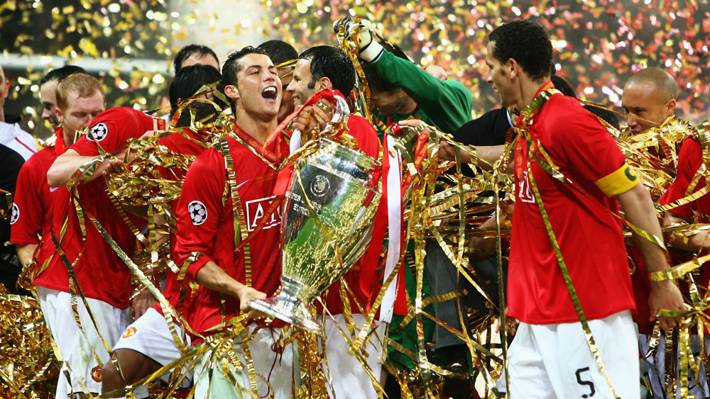
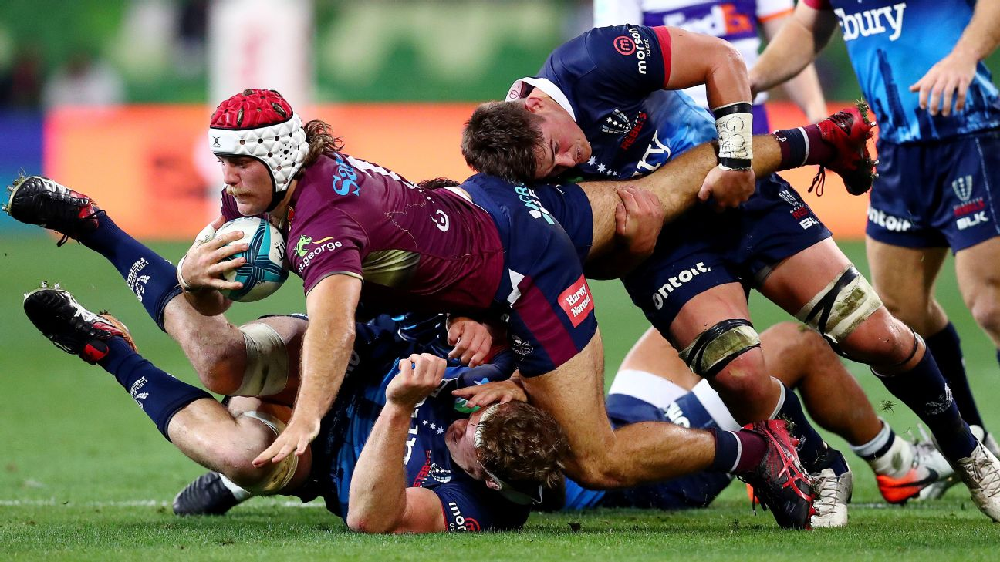
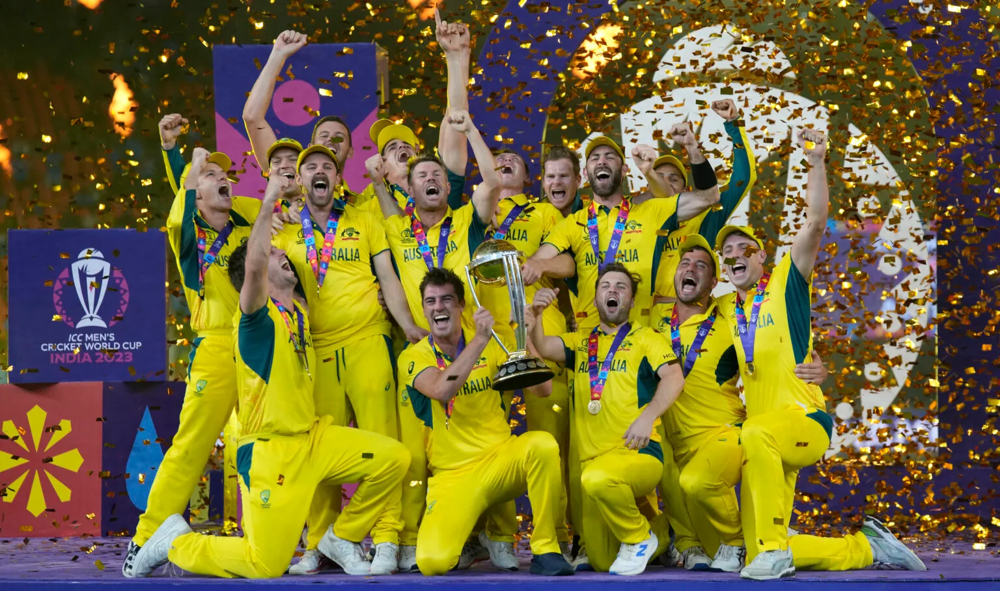

O futebol no Reino Unido é mais do que um esporte; é parte central da identidade cultural britânica. A criação da Football Association em 1863 marcou o início do futebol moderno ao estabelecer regras padronizadas que se tornaram a base do esporte praticado no mundo inteiro. A paixão pelo futebol se manifesta tanto nas arquibancadas quanto no dia a dia das cidades britânicas, onde praticamente todo bairro abriga um campo, uma escolinha ou um clube local. A Premier League é considerada uma das ligas mais importantes globalmente, reunindo atletas do mundo inteiro e contando com transmissões para dezenas de países. A rivalidade entre clubes históricos, como Manchester United e Liverpool, é tão intensa que influencia gerações e movimenta milhares de torcedores em cada temporada. O futebol também tem um caráter regional dentro do Reino Unido, já que Inglaterra, Escócia, País de Gales e Irlanda do Norte possuem seleções próprias e tradições particulares, algo que dá ao esporte uma variedade única. Além disso, muitos estádios britânicos são considerados templos do futebol mundial, como Old Trafford, Anfield e Wembley, e fazem parte da memória afetiva de milhões de torcedores.
O rugby possui uma ligação igualmente forte com a história britânica. Surgido no século XIX, o esporte é cercado por valores como disciplina, camaradagem e respeito, sendo visto como uma prática nobre tanto entre estudantes quanto entre profissionais. A famosa história do jovem William Webb Ellis pegando a bola com as mãos em pleno jogo de futebol continua sendo lembrada como símbolo da origem do rugby, mesmo que sua veracidade seja discutida. No Reino Unido, o rugby evoluiu em duas direções: o Rugby Union e o Rugby League. O Union é mais associado à tradição e à estrutura escolar e universitária, contando com jogos mais estratégicos, formações de scrum complexas e partidas que exigem grande preparo físico. Já o Rugby League nasceu no norte industrial da Inglaterra e se tornou um esporte dinâmico, mais direto e mais rápido, muito popular entre as classes trabalhadoras da região. O torneio Six Nations é um dos eventos mais importantes do calendário esportivo europeu e atrai enorme atenção todos os anos, reforçando o papel central que o rugby desempenha na cultura britânica. Em cidades como Cardiff, Edimburgo e Londres, dias de jogo transformam as ruas, reunindo famílias, torcedores e celebrações tradicionais.
O críquete, por sua vez, é um dos esportes mais emblemáticos do Reino Unido, com raízes que remontam ao século XVI. É profundamente associado à história do país, às tradições aristocráticas e aos rituais que permanecem praticamente inalterados há séculos. A expansão do Império Britânico ajudou a transformar o críquete em um fenômeno global, especialmente na Índia, no Paquistão, na Austrália e no Caribe, onde hoje é parte essencial da cultura local. No Reino Unido, o críquete mantém sua atmosfera clássica, com fãs acompanhando longas partidas enquanto bebem chá e desfrutam de uma experiência muito mais calma e sofisticada do que outros esportes. O icônico estádio de Lord's, em Londres, é considerado a “Casa do Críquete” e carrega um prestígio enorme dentro e fora do país. Um dos pontos mais marcantes do críquete britânico é a rivalidade histórica contra a Austrália, materializada na disputa chamada The Ashes, que existe desde o século XIX e é considerada uma das séries esportivas mais tradicionais do mundo. O críquete também é um esporte que valoriza a ética, o comportamento respeitoso e a ideia de “fair play”, elementos que compõem sua identidade desde sua criação.
O tênis no Reino Unido é inseparável de Wimbledon, o torneio mais antigo e mais famoso do mundo, realizado desde 1877. O campeonato mantém tradições muito rígidas, como o uso de roupas totalmente brancas pelos jogadores, a presença da família real nas arquibancadas e a manutenção de quadras de grama perfeitamente cuidadas. Cada detalhe, desde os morangos com creme servidos ao público até o silêncio respeitoso durante os pontos, reforça o caráter clássico e elegante do evento. Embora o tênis não seja praticado por tanta gente quanto futebol ou rugby, Wimbledon elevou o prestígio do esporte dentro do país e criou uma cultura de admiração pelos atletas que competem ali. Durante anos, o Reino Unido sofreu com a falta de campeões nacionais no torneio, até que Andy Murray conquistou Wimbledon em 2013 e novamente em 2016, reacendendo o orgulho britânico pelo esporte e inspirando novas gerações. O tênis no Reino Unido também é incentivado em clubes tradicionais espalhados por diversas cidades, onde a prática é vista como um passatempo saudável e socialmente prestigiado.